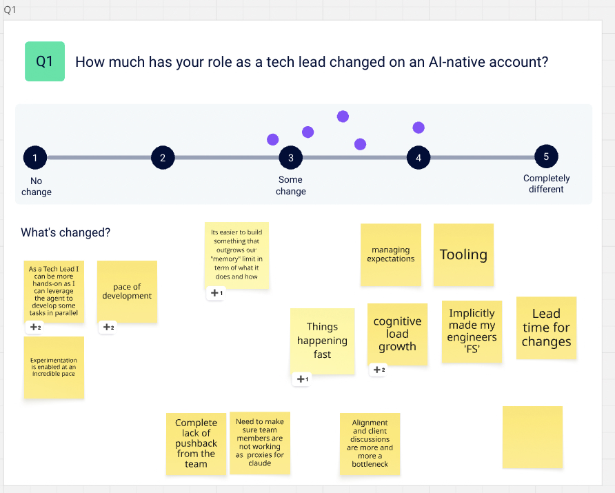
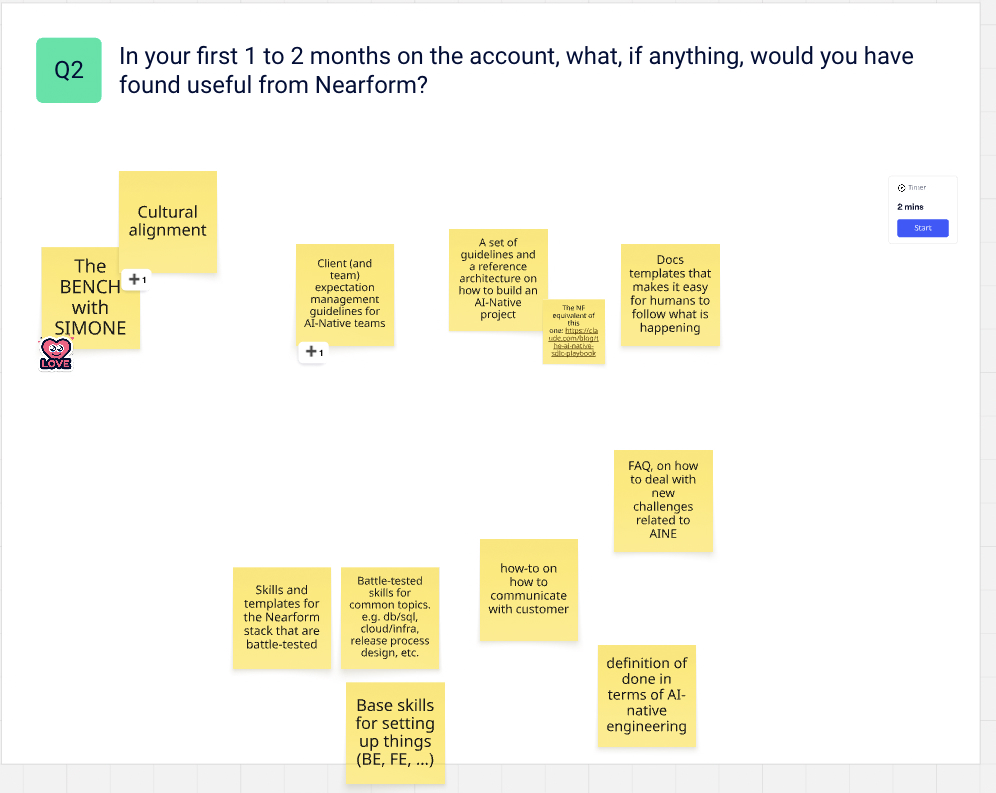
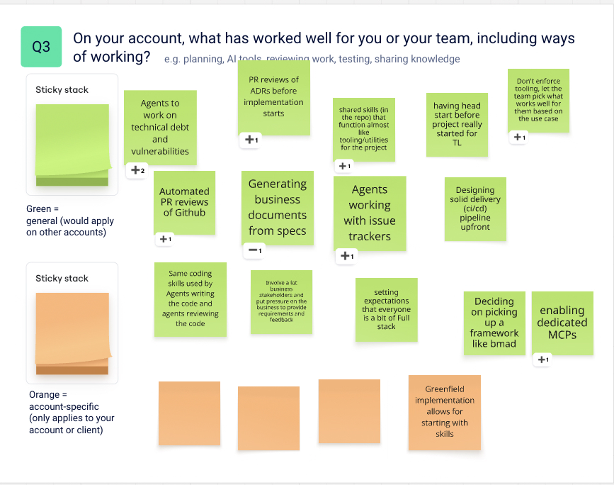
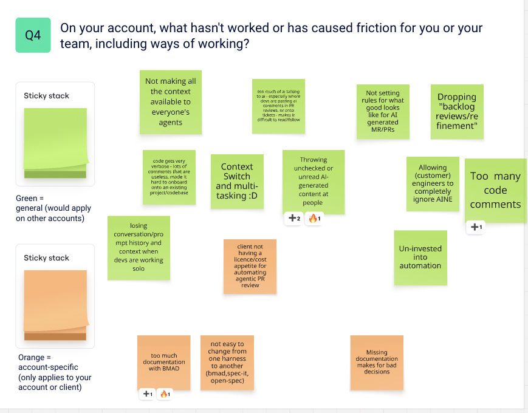
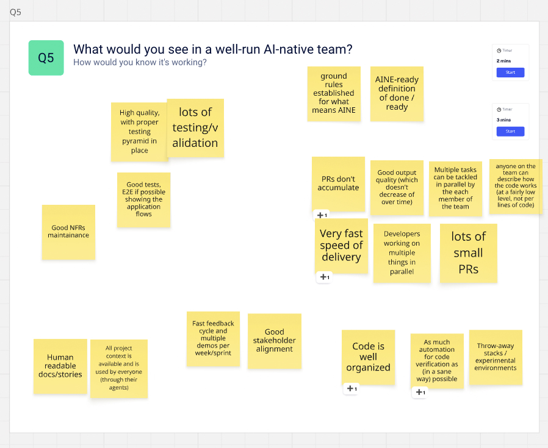
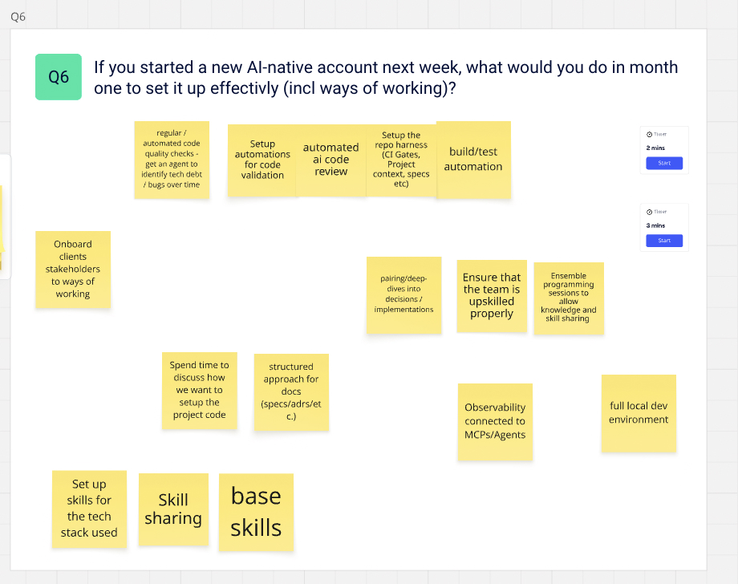
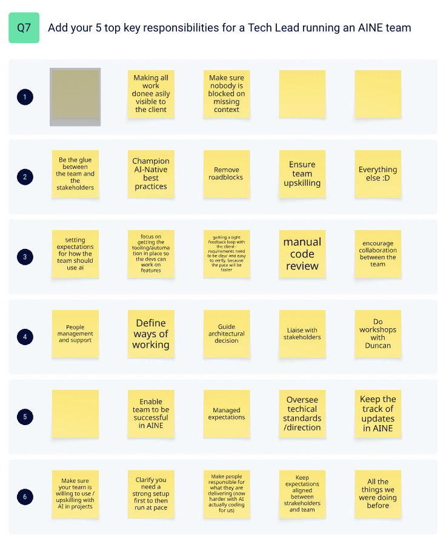

Summary_
- The role has changed. Every tech lead who voted put it between "some change" and "completely different". None said it was unchanged.
- The change is landing on the tech lead. Work moves faster, clients expect more in less time, and the tech lead carries more at once. Agents let them be hands-on again, but AI has added duties without taking any away.
- Teams are behaving differently. On some teams, engineers challenge less and pass on AI output unread, and cheap code makes weighty decisions look cheap. Tech leads handle this case by case and want the expectations written down.
- They broadly agree on what good looks like. Set up first, then run at pace. Automate verification. Keep PRs small and flowing. Make sure everyone understands the code. Keep the client close.
- They want Nearform to take a position on both lenses. Technical: skills, templates and a reference architecture. People: ways of working, definitions, and guidance on client expectations.
Q1 · How much has your role changed?_
Everyone said the role has changed: more than "some change", short of "completely different". This matters because the working assumption so far has been that tech lead issues are mostly generic, not specific to AI. The tech leads describe changes that come from working with AI.
What has changed
Everything moves faster
Pace of development, lead time for changes, things happening fast. Work that used to sit on a roadmap for months now turns around in days.
Cognitive load has grown
Tech leads run several streams of work at once with agents in the background. It is possible, and it is draining.
Tech leads can be hands-on again
Agents build software while the tech lead handles alignment, review and the client. Before, there was rarely time to write code as well.
Expectations have changed
Clients have learned that change is cheap and fast, so they expect it. Expectations have to be managed more often, in less time, and alignment with the client is becoming the bottleneck.
Teams are less opinionated
On some teams, engineers challenge less and accept what the AI proposes. Some act as proxies, pasting questions into Claude and its answers back. Decisions flow back to the tech lead, who carries more strain encouraging the right behaviour. Not every team shows it, but it is a challenge to address.
Cheap code hides weighty decisions
Code and experiments are cheap, so decisions feel cheap. Some are not: a pattern, a framework or an infrastructure choice spreads at agent speed and is expensive to undo. Those need more attention, not less.
See the board for Q1

Q2 · In your first one to two months, what would have been useful from Nearform?_
- Battle-tested skills and templates for the Nearform stack, and base skills for setting up back end and front end.
- Standards and definitions: a reference architecture for an AI-native project, an AI-native definition of done, documentation templates, and an FAQ for common AI-native challenges. One asked for a Nearform equivalent of an AI-native SDLC playbook.
- Client guidance: how to manage client and team expectations on an AI-native team, and how to communicate with the customer.
- People and culture: an experienced person to turn to, and cultural alignment.
Most of this matches what they said they would set up themselves in month one (Q6).
See the board for Q2

Q3 · What has worked well for you or your team?_
- Agents in the workflow: on tech debt and vulnerabilities, on automated PR reviews, connected to the issue tracker, using the same skills to write and to review code.
- Decisions made early: architecture decisions reviewed before implementation starts, the delivery pipeline designed upfront, and a head start for the tech lead before the project starts.
- Shared skills in the repo that work like project tooling.
- Specs that generate the client's paperwork, such as documents for change management on the way to production.
- Choice: let the team pick tools that suit the job.
Almost all of these were marked general rather than account-specific.
See the board for Q3

Q4 · What hasn't worked, or has caused friction?_
- Unchecked AI output landing on people: unread AI content handed on, AI talking to AI in PRs and tickets, verbose code and too many comments. The most-voted friction point.
- Rules nobody set: no agreed bar for an AI-generated PR, refinement dropped, client engineers allowed to opt out of the AI-native approach.
- Lost context: context not shared with everyone's agents, prompt history lost when people work alone.
- Framework lock-in: a framework brings a whole process with it, so switching (BMAD, Spec Kit, OpenSpec) is possible but costly. Choose knowing where it is heading.
- Client constraints, such as no budget for agentic PR review licences.
The session agreed a norm: people need not know every line the AI wrote, but must understand how it works and answer questions on it. It is enforced case by case today; tech leads want it written down.
See the board for Q4

Q5 · What would you see in a well-run AI-native team?_
Quality holds
A proper testing pyramid, end-to-end tests where possible, non-functional requirements maintained, quality that does not decline over time, as much automated verification as is sensible.
Work flows
PRs don't pile up, lots of small PRs, fast delivery, people working on several things in parallel.
Everyone understands it
Anyone can describe how the code works, all project context is available to everyone's agents, docs and stories are readable by people.
The client is close
A fast feedback cycle, several demos a week or sprint, good stakeholder alignment.
The rules are clear
Ground rules for what AI-native means here, and an AI-ready definition of done and ready.
See the board for Q5

Q6 · If you started a new AI-native account next week, what would you do in month one?_
Set up first, then run at pace
- The repo harness: CI gates, project context, specs
- Automated code validation and AI code review
- Build and test automation, and an agent that tracks tech debt and bugs over time
- Skills for the tech stack, observability connected to agents, a full local dev environment
Agree how the team works
- Discuss how the project code should be set up before building it
- A structured approach to specs, ADRs and docs
- Upskill the team properly: pairing, deep dives, ensemble programming, skill sharing
- Onboard client stakeholders to the ways of working
See the board for Q6

Q7 · Your top five responsibilities as a tech lead on an AI-native team_
| Theme | Tech leads | In their words |
|---|---|---|
| The client and stakeholders | 6 of 6 | Be the glue between the team and the stakeholders; keep expectations aligned; a tight feedback loop with the client; make all work visible to the client |
| AI enablement and upskilling | 4 of 6 | Set expectations for how the team uses AI; champion AI-native practice; make sure the team is willing to upskill |
| Technical direction and ownership | 4 of 6 | Guide architecture; oversee standards; manual code review; make people responsible for what they deliver |
| Everything that was there before | 2 of 6 | "Everything else"; "all the things we were doing before" |
The AI responsibilities were added on top. Nothing was taken away, which matches the growing load in Q1.
See the board for Q7

Two lenses_
The answers split into a technical lens and a people lens. Both matter, and the people lens is where tech leads asked Nearform to take a position.
Technical lens
- Skills, templates and a reference architecture
- The repo harness, CI gates and automated review
- Shared context for agents
- Testing and verification
- Choosing a framework knowing the cost of leaving it
Asked of NearformBattle-tested skills and templates, base set-up skills, a reference architecture, documentation templates.
People lens
- Ways of working, and a definition of done for AI-native work
- Expectations: owning and understanding AI-generated work, no proxies
- A team that challenges and keeps its judgement
- Communicating with the client and managing expectations at AI pace
- Upskilling and sharing knowledge
Asked of NearformClient expectation guidelines, how to communicate with the customer, an AI-native definition of done, an FAQ, cultural alignment, someone experienced to ask.